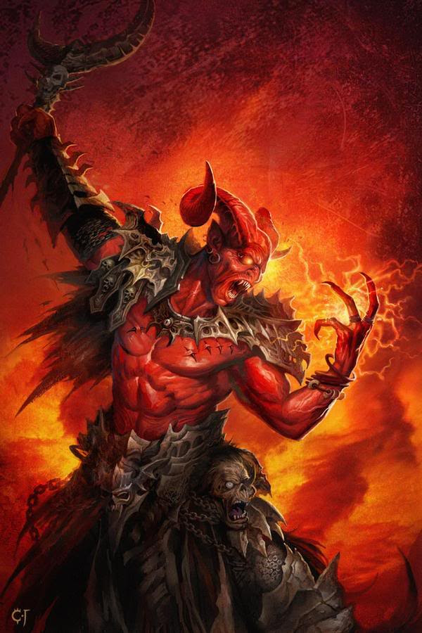
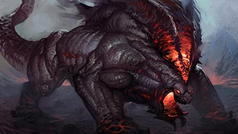
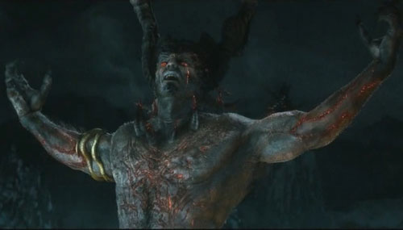

Setan atau syetan adalah makhluk dalam agama samawi yang menggoda manusia untuk berbuat jahat

Behemoth digambarkan sebagai sosok iblis besar dan kuat. Hanya Tuhan sendiri yang bisa mengalahkan makhluk mengerikan ini. Ekor dari makhluk ini dikatakan sangat besar seukuran pohon cedar.

Dalam literatur agama Samawi, Lucifer (Azazil) dikatakan “iblis terkuat di dunia ini” memiliki pangkat paling tinggi sebagai Satan (Rajanya Raja Iblis).